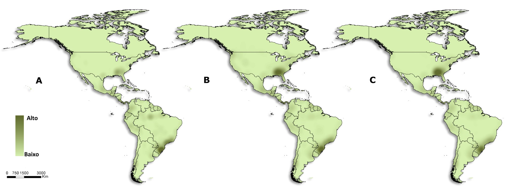
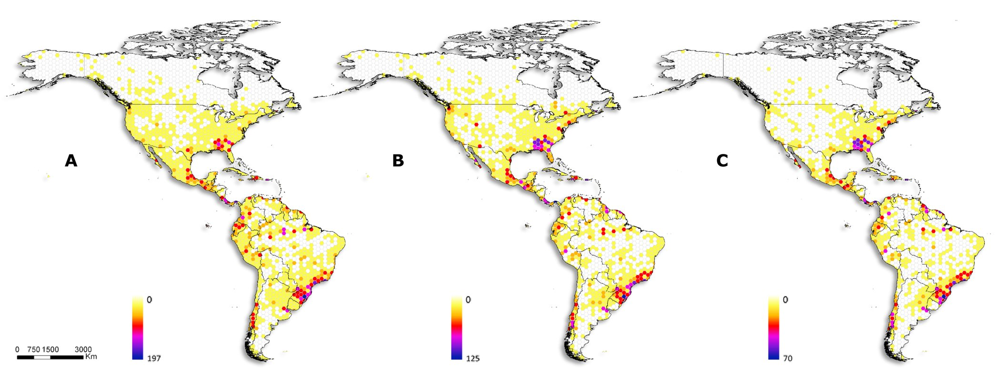
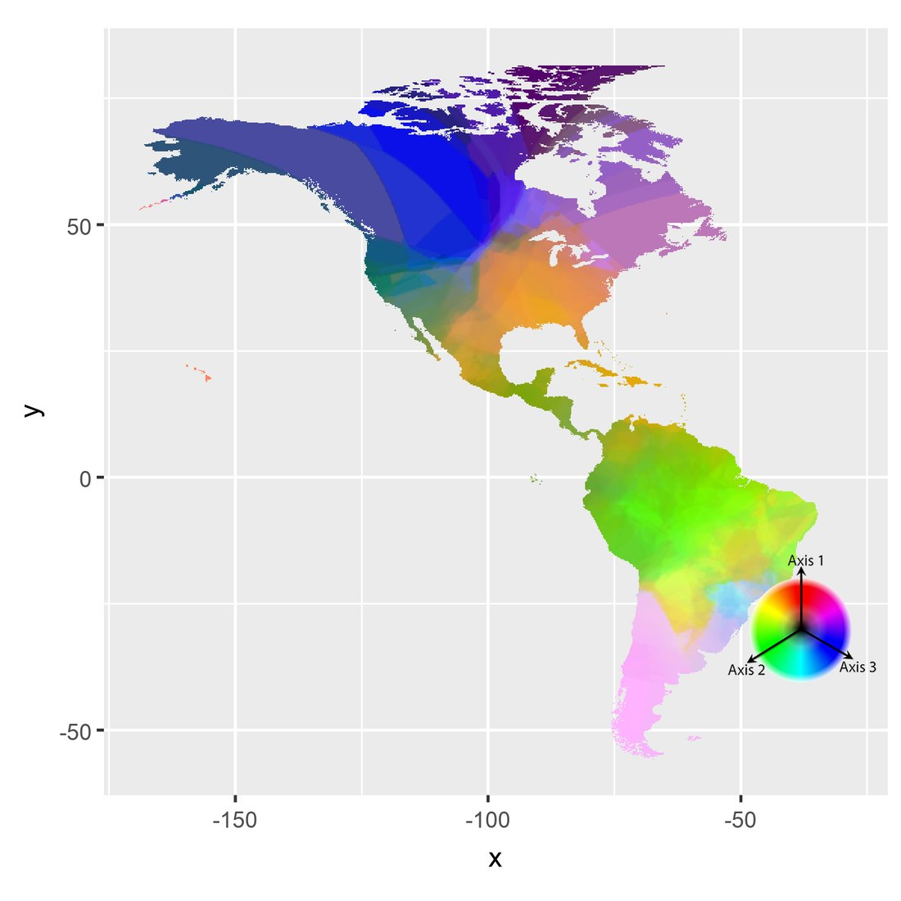
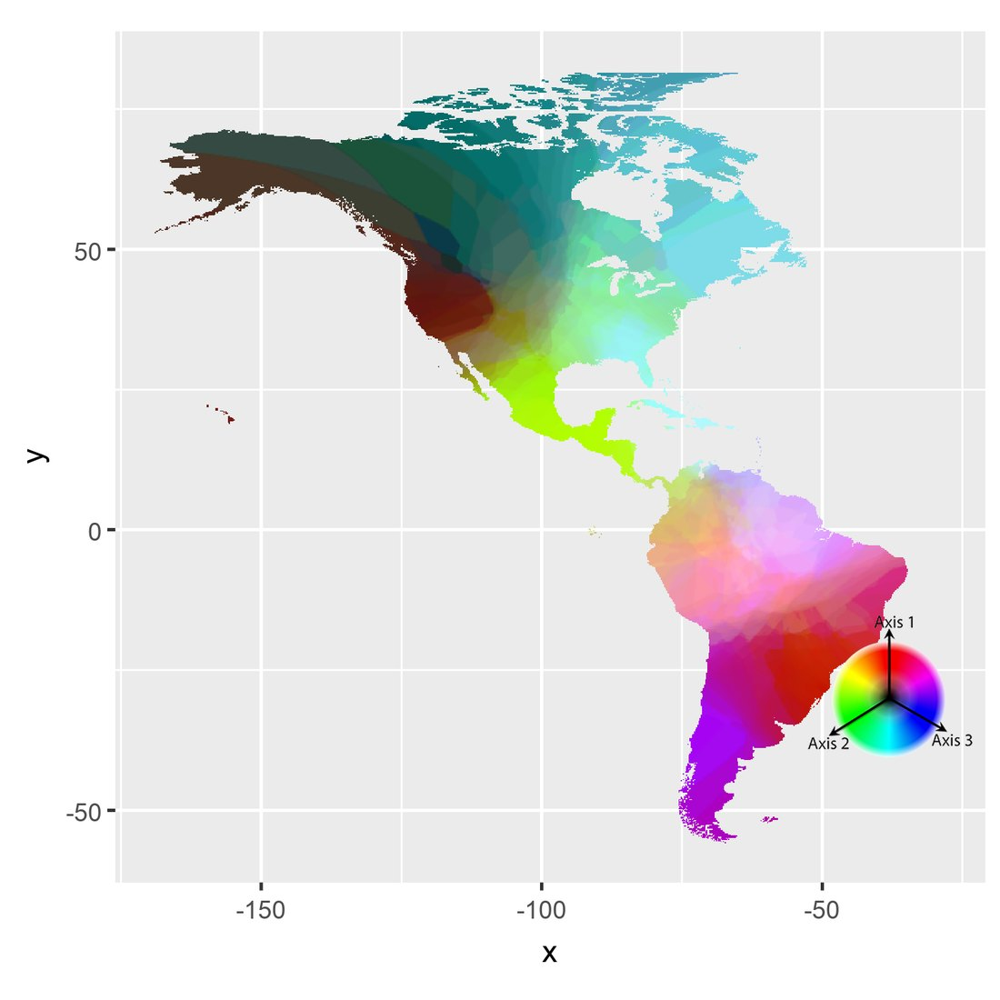
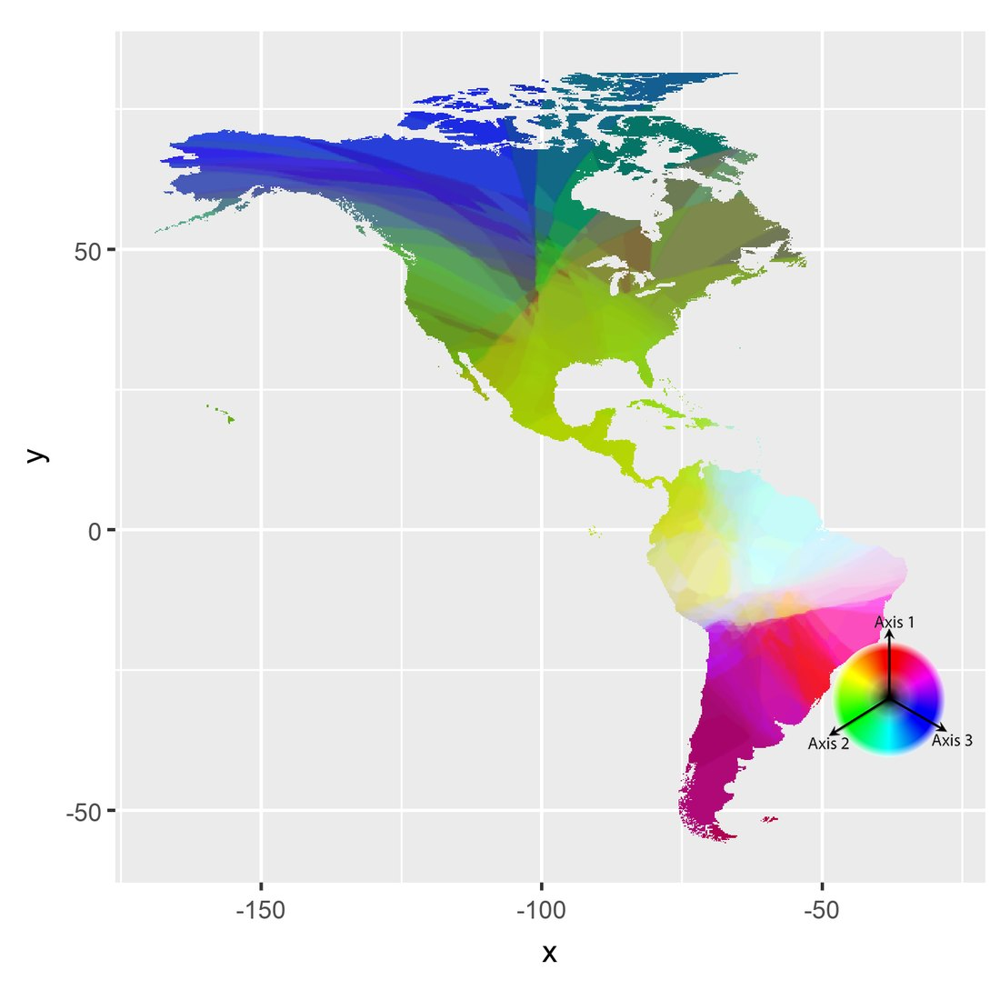

Aranhas araneoideas das Américas: 260 anos de coleta no mapa da diversidade
Riqueza, composição e endemismo em três recortes no tempo, de 1757 a 2017, para separar o padrão biogeográfico da história da coleta.
- Entrega
- Dissertação de mestrado, PPG Zoologia, UFMG
- Orientação
- Adalberto J. dos Santos · coorientação Ubirajara de Oliveira
- Meu papel
- Autor: banco de dados, análises e mapas
- Ferramentas
- ArcMap · Dinamica EGO · Google Earth Pro · Past



Até 2017
Até 1971
Até 1892Densidade Kernel dos registros: A. até 2017; B. até 1971; C. até 1892. Tons mais escuros indicam mais registros. O sudeste dos Estados Unidos dominava no início; com o tempo, o sul e o sudeste do Brasil ganham peso.
Riqueza em hexágonos de 1°: A. todos os registros, até 2017; B. até 1971; C. até 1892. Os recortes antigos já mostram boa parte do padrão atual, com picos no sul do Brasil e no sudeste dos Estados Unidos.
Três eixos de um NMDS com índice de Bray-Curtis, interpolados e combinados em cores RGB. Cores diferentes indicam comunidades diferentes; as cores não se comparam entre os mapas.
O problema
Mapas de diversidade em escala continental costumam ser lidos como retrato da natureza, mas também registram onde e quando se coletou. Araneoidea, a maior e mais estudada superfamília de aranhas, era um bom modelo para medir esse efeito nas Américas.
Os dados
Literatura taxonômica do World Spider Catalog: cerca de 1.850 trabalhos analisados, 550 com informação geográfica. O resultado foram 27.396 registros, georreferenciados no Google Earth Pro em 25.115 pontos e 8.642 localidades, organizados num catálogo de registros e num gazetteer.
O método
- Riqueza em malha de hexágonos de 1° no ArcMap e densidade Kernel dos registros.
- Composição por NMDS com índice de Bray-Curtis, interpolada no Dinamica EGO e separada em turnover e aninhamento.
- Áreas de endemismo por interpolação geográfica (GIE), em classes de amplitude de distribuição.
- Três recortes no tempo, até 1892, 1971 e 2017, definidos por quebras naturais nos anos de publicação dos registros.
- Para cada recorte, 100 réplicas com o mesmo número de registros sorteados do conjunto completo, para separar o efeito do tempo do efeito do volume de dados; comparação por regressão no Past.
- Cartogramas por país, com a área proporcional ao número de espécies.
O resultado
A riqueza conhecida de Araneoidea acompanha a densidade de registros (r = 0,7): o mapa da diversidade é também o mapa da coleta.
- O sul e o sudeste do Brasil e o sudeste dos Estados Unidos reúnem alta riqueza e alto esforço de coleta acumulado.
- As áreas de endemismo mudam bastante à medida que novos dados chegam.
- A composição de espécies depende menos do histórico de coleta, e suas quebras lembram divisões naturais baseadas em clima e vegetação.
- Até 1892, só duas espécies de Araneoidea eram conhecidas no México; em 1971, já eram 112.
Publicação
- Russo P. (2019). Padrões biogeográficos e estruturação do conhecimento taxonômico das aranhas araneoideas americanas. Dissertação de mestrado, Programa de Pós-Graduação em Zoologia, UFMG.